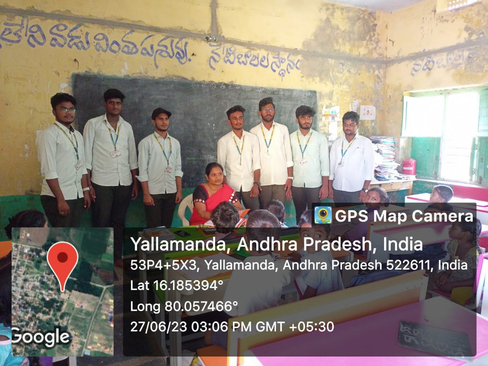
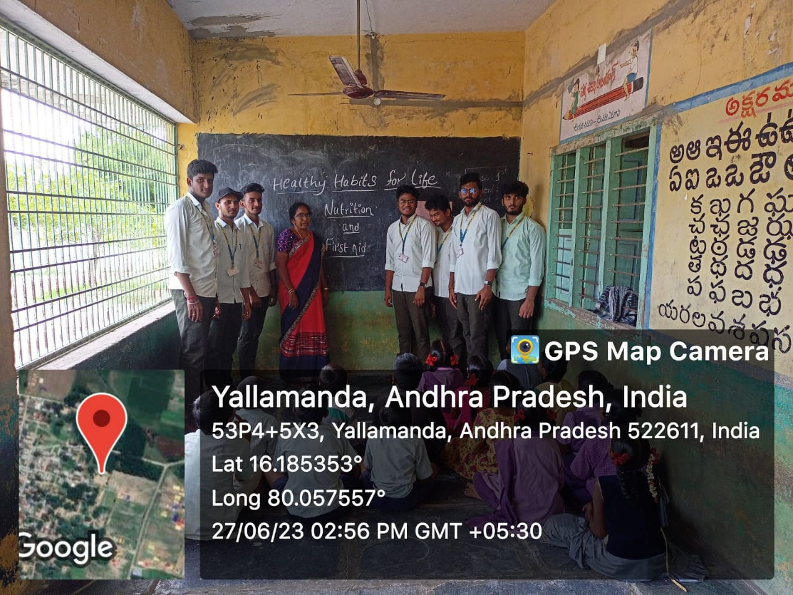
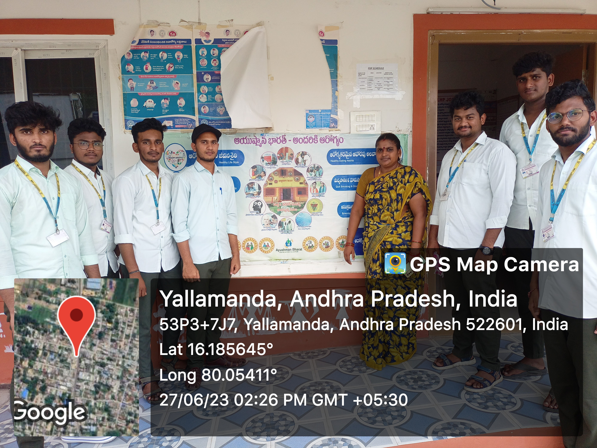
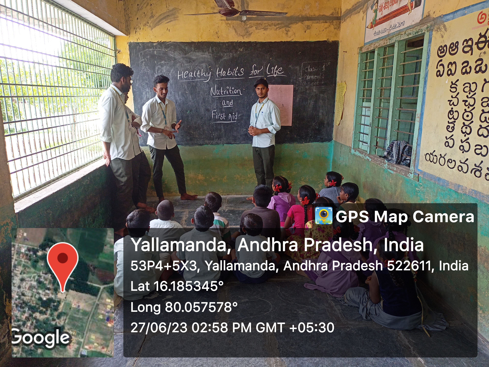
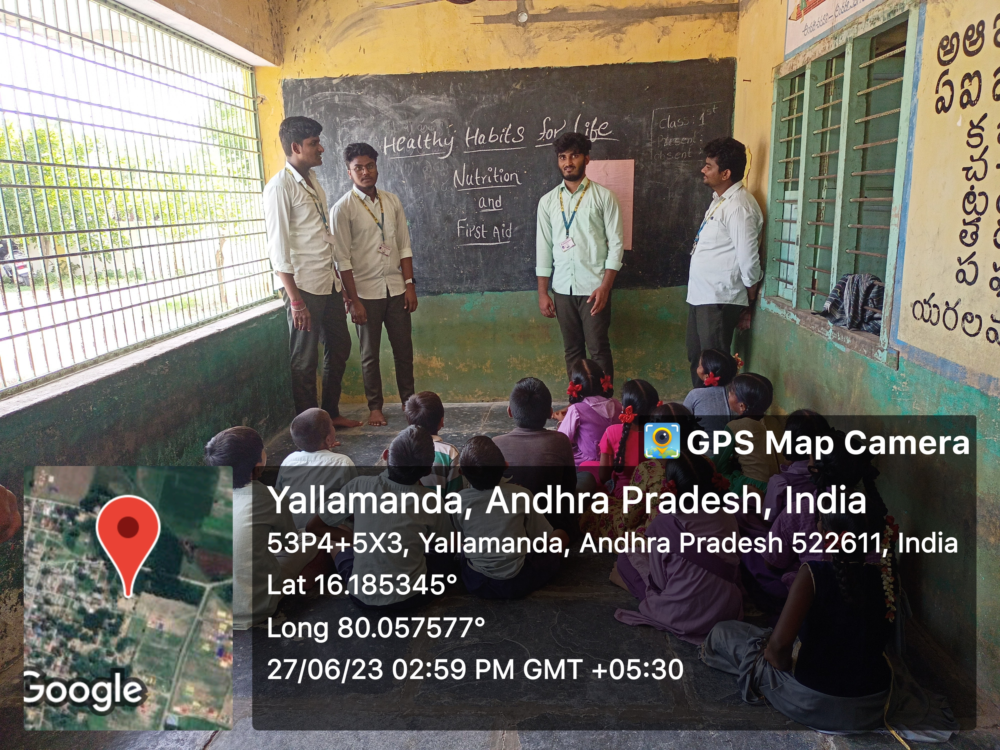
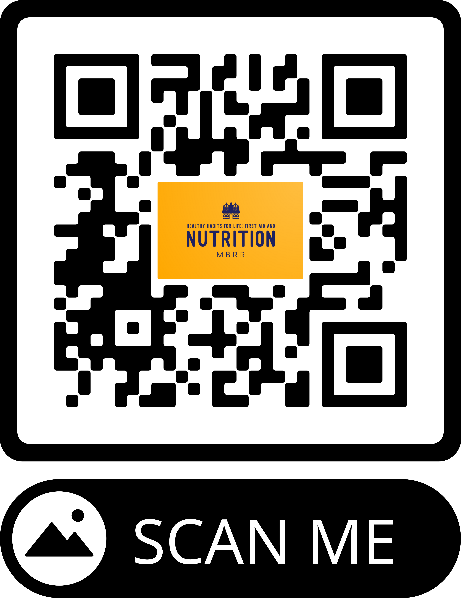

Healthy Habits for Life
Empowering Communities with First Aid and Nutrition Knowledge
Healthy Habits for Life: Empowering Communities with First Aid and Nutrition Knowledge
Empowering communities with first aid and nutrition knowledge is a valuable initiative that can promote the well-being and health of individuals. Here are some healthy habits for life that can help empower communities in these areas:
1. First Aid Education:
Basic First Aid Training: Organize workshops and training sessions to teach community members essential first aid skills such as CPR, wound care, choking relief, and handling emergencies.
First Aid Kits: Encourage households and community centers to keep well-stocked first aid kits readily available and provide guidance on their proper use.
Emergency Preparedness: Promote awareness about emergency preparedness, including creating evacuation plans, assembling emergency supply kits, and knowing how to respond in natural disasters.
First aid refers to the initial assistance or care provided to a person who has been injured or suddenly becomes ill. It is the immediate response to an emergency situation before professional medical help arrives. Here are some essential first aid techniques and tips:
1. Assess the Situation:
- Ensure your safety and the safety of others before providing aid.
- Evaluate the scene for any potential hazards or risks.
2. Call for Help:
- Dial emergency services or instruct someone nearby to call for medical assistance if needed.
3. Perform Basic First Aid Techniques:
- CPR (Cardiopulmonary Resuscitation): Perform chest compressions and rescue breaths on an unconscious person who is not breathing or has no pulse.
- Choking Relief: Administer the Heimlich maneuver for a conscious choking victim.
- Control Bleeding: Apply direct pressure to the wound using a clean cloth or your hand.
- Fracture or Sprain: Immobilize the injured area by creating a splint or using a support like a sling.
- Burns: Cool the affected area with running water for at least 10 minutes.
- Seizures: Create a safe space around the person, protect their head, and clear away any objects that may cause harm.
- Allergic Reactions: If someone experiences a severe allergic reaction (anaphylaxis), administer an epinephrine auto-injector if available and seek medical assistance.
4. Provide Comfort and Reassurance:
- Stay calm and reassure the injured or ill person.
- Offer emotional support and comfort.
5. Continually Monitor the Person's Condition:
- Observe any changes in their condition and be prepared to adjust your first aid actions accordingly.
- Stay with the person until professional help arrives.
It's important to note that while knowing basic first aid can be helpful, it is always recommended to undergo formal first aid training and certification from recognized organizations such as the Red Cross or other local health authorities. These organizations offer comprehensive courses that cover a wide range of first aid techniques and provide hands-on practice to ensure you are well-prepared to respond effectively in emergency situations.
Remember, providing first aid should be done within your training and comfort level. If you are unsure or the situation is beyond your capabilities, do not hesitate to call for professional medical help.
2. Healthy Habits :
Regular Physical Activity:
Engage in at least 150 minutes of moderate-intensity aerobic exercise or 75 minutes of vigorous-intensity exercise every week.
Incorporate strength training exercises at least twice a week to build muscle and improve bone health.
Stay active throughout the day by taking breaks from prolonged sitting and incorporating physical activity into your daily routine.
Balanced Diet:
Consume a variety of fruits, vegetables, whole grains, lean proteins, and healthy fats.
Limit processed and sugary foods, as well as excessive salt and saturated fats.
Stay hydrated by drinking an adequate amount of water throughout the day.
Sufficient Sleep:
Aim for 7-9 hours of quality sleep per night to support overall well-being and optimal functioning.
Establish a regular sleep schedule and create a sleep-friendly environment.
Stress Management:
Practice stress-reducing techniques such as deep breathing exercises, meditation, yoga, or engaging in hobbies and activities you enjoy.
Prioritize self-care and relaxation to maintain a healthy balance in life.
Hygiene Practices:
Wash hands frequently with soap and water for at least 20 seconds, especially before eating and after using the restroom.
Follow proper oral hygiene by brushing teeth twice a day and flossing daily.
Maintain personal hygiene by showering regularly and keeping nails clean.
Mindful Eating:
Eat slowly and mindfully, paying attention to hunger and fullness cues.
Practice portion control to avoid overeating.
Avoid distractions while eating, such as watching TV or using electronic devices.
Regular Health Check-ups:
Schedule routine check-ups with your healthcare provider for preventive screenings and vaccinations.
Stay up to date with recommended health screenings based on your age, gender, and family history.
Mental and Emotional Well-being:
Prioritize activities that promote mental and emotional well-being, such as engaging in hobbies, spending time with loved ones, and seeking support when needed.
Practice stress management techniques and seek professional help if you're struggling with mental health issues.
Limit Alcohol and Tobacco:
Drink alcohol in moderation or avoid it altogether.
Quit smoking and avoid exposure to secondhand smoke.
Stay Socially Active:
Maintain connections with family, friends, and the community.
Engage in social activities that bring you joy and a sense of belonging.
Remember, developing healthy habits takes time and consistency. Start by incorporating small changes into your daily routine and gradually build upon them. It's important to listen to your body and make choices that align with your individual needs and preferences.
3. Nutrition Education:
Healthy Eating Workshops: Conduct workshops on nutrition, emphasizing the importance of a balanced diet, portion control, and the inclusion of fruits, vegetables, whole grains, lean proteins, and healthy fats.
Cooking Demonstrations: Host cooking demonstrations to showcase simple, affordable, and nutritious recipes that community members can easily prepare at home.
Community Gardens: Encourage the establishment of community gardens where residents can grow their own fruits and vegetables, fostering a sense of ownership and promoting access to fresh produce.
Food Label Reading: Educate individuals about how to read food labels, understand nutritional information, and make informed choices when purchasing groceries.
Healthy Snack Options: Promote the availability and consumption of healthy snacks in schools, workplaces, and community centers, discouraging the consumption of sugary and processed foods.

Healthy Habits
A health habit is any regularly occurring behaviour that is advantageous to your mental or physical health.
First AID
Emergency care or treatment given to an ill or injured person before regular medical aid can be obtained.

Nutrion
Nutrition is the process of taking in food and converting it into energy and other vital nutrients required for life.

Healthy Habits
A health habit is any regularly occurring behaviour that is advantageous to your mental or physical health.

First AID
Emergency care or treatment given to an ill or injured person before regular medical aid can be obtained.

Nutrion
Nutrition is the process of taking in food and converting it into energy and other vital nutrients required for life.

WE THANKS FOR MANAGEMENT , PRINCIPAL SIR, HOD SIR FOR COMPLETION OF COMUNITY SERVICE PROJECT IN TIME.
A SPECIAL THANKS TO :
Dr.M.Srinivasa Kumar
S.N.Thirumalarao
SK. Rafi